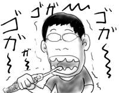
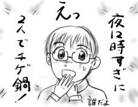
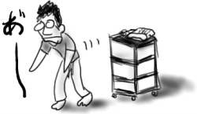

出社中，違和感を感じて空を見上げたところ，全天がうろこ雲で覆われていました．こんな広範囲のうろこ雲を見たのは初めてです．キモッ！！
「ミズグチさん，おかしいです！」「ん，それ僕のミス！」
僕のウッカリぶりによって生まれでる仕事．あまりうれしくない．
先日(10/27)使い始めたばかりの電動歯ブラシですが，もう電池がへたってきました．押し当てて磨いても，歯がツルツルになりません．あんなに大きな作動音を響かせていたモーターも，秋虫の鳴き声のようです．三日坊主かよ！(意味違う)
駆動には単4電池が2本必要なので，単純に考えて，満足に歯を磨くためには1ヶ月に単4電池が20本も必要です．人魚は地球を甘やかしません．
最近会社では閑職もいいところで，かなり泣きそうな状況です．
出来ることならジャイアニズムを手に入れて「<たてかべ和也>おい，のび太！おもしろそうな仕事，ちょっと俺によこせよ．ドラえもんなら出せるんだろ．</たてかべ和也>」と言ってしまいたい．そういうギリギリ感で漲っています．僕がたてかべ和也ならいいのに(普通なら定年です)．
そんなわけでここのところ早い帰宅が続いてるのですが，時間がある時は古本屋めぐりという逆転物欲発想でもって市内の古本屋を巡っては早川や創元の棚をあさりまくっているのです．今日もグレッグ・イーガン『宇宙消失』(創元SF文庫)を100円で手に入れました．小説は最もコストパフォーマンスの高い娯楽だと思います．
夜中にお腹がすいたので，ふりかけ(梅)をちびちび，ぽりぽりと舐めていたら物悲しくなってきたので今日のところはこれで寝ることにします．グー(二重の意味で)．
なげやりですいません．
発売直後('91年頃)に買ったはいいけど小川隆訳が苦手で放り出していたマイクル・スワンウィック『大潮の道』(早川SF文庫)になんとなく再挑戦．前半で出来事の因果関係がつかめず，またもや挫折しかけたのですが，中盤以降，<謎迷宮>と呼ばれる仮想空間上で捜査が展開し始めると俄然おもしろくなってきました．
複数人格に分割して捜査を並列で進め，結果が出た時点で合流しながら場所を転移していく描写や，機械知性の暴走によって機能不全に陥った地球が，空を覆うほどの巨大な老婆の姿として<謎迷宮>側にアクセス界面を覗かせているあたりの描写に目眩を覚えます．ラストでアクロバティックに重ね合わされる寓意もなかなかですが，ほとんど反則だという気もします．予想以上にまっとうなミステリの構造をしていたので驚きました．
そんなわけで意外と楽しく読み終わったのですが，これもう絶版らしいですね．無理もない気もしますが．
久しぶりに晴れたので昨日室内に干してイヤな感じに生乾きの衣服を全て屋外にさらしました．今月なんて晴れた日は半分もないんじゃないかという感じでまるで梅雨のようです．前から秋ってこんなだったっけ？やっぱり春先に台風が来すぎた影響があるんでしょうか．
いつもなら日曜日は積ん読本を読んで過ごすのですが，今日はなんだか気が緩むと眠りに入っていてなんだか冴えないダルダルの1日でした．
昨日引き当てた電動歯ブラシを使ってみたのですが，優雅な人魚姫の外観からはほど遠いもの凄いモーター音を鳴り響かせて僕の歯垢を蹂躙して行きました．人魚姫が僕の唾液でベトベトになったりもしました．控えめに言って人魚姫を電動歯ブラシにあしらおうと考えたデザイナは気が触れていると思います．

やっぱりブラウンの3D電動歯ブラシじゃないとダメかしら？世界最速！もしくはオキシジェット！すげぇ．
なんというか，電動歯ブラシって世界観が度外れだなぁ．
同期の結婚パーティに出かけました．ここのところ頻繁です．
前回と違って，同期オンリーイベント(嫌な表現)ではなかったのですが，結局のところ新郎友人の半数は同期だったので，同期にまぎれてダラダラしていました．しかし，前回と違って暗黒同期もいなかったので，結構いっぱいいっぱいの外向きモードでした．
外向きモードのために普通に参加してしまった新郎新婦○×クイズで，狙いに反して思わず勝ち進んでしまって，前に集合させられる羽目になってしまいました．目立つつもりはなかったのに．間違えるつもりで答えたものがひっかけ問題だったようで，逆淘汰されてしまいました．最後の最後まで残ってなるものか，と適当なところでさっさと景品をゲットして逃げました(ちゃっかり)．
景品は電動歯ブラシということだったので，これはそれなりにいいものをゲットしたのかなぁと思ってさっそく開封してみたところ…．
激しくいらねぇ！！
新婚の同僚が「昨日二人とも夜遅くて，12時過ぎてからチゲ鍋とかガッツリ食べることになっちゃって結構つらかった」ということを言い出しました．「夜12時すぎに二人でチゲ鍋！？」
その語感が妙におもしろくて「夜12時すぎに二人でチゲ鍋！おもしろいねぇ．声に出して読みたい日本語だねぇ．」と言ったところ怪訝な顔をされました(当然)．

これを読んでいる人も是非声に出して読んでいただいて，そのおもしろさを実感して欲しいと思います(無理)．
昨晩は，無茶苦茶眠いのに何故かなかなか寝つけず，寝酒代わりに読みかけのロバート・J・ソウヤー『イリーガル・エイリアン』(ハヤカワSF文庫)を読み始めました(大幅に間違い)．家でアルコールを嗜む習慣はありませんしね．
一旦話が転がり始めると，止めどころが分からない感じにおもしろくなってきたので読み続けたところ，気が付くと(=読み終わると)朝の7時でした．ご…ごめん…(誰に謝っているのですか?)．読み終わるまで気付かないあたりがさすがだなぁと妙に自分に感心しながら急いで寝に入ったのですが，それでもなかなか寝つけず，ごろごろしてたらようやく睡魔が襲ってきました．むしろ来てくれない方がよかったです．
案の定，目が覚めたのは就業開始8分前だったので，速攻で会社に電話を入れ，午前半休を申請しました．そのまま布団に逆戻り．ママケーキ．

午後，会社に行ってぼんやりしていると，中途採用者の紹介の掲示が目にとまりました．簡単なQ&Aと一緒に顔写真が掲載されています．
Q3:あなたのセールスポイントは？
A3:小さいけど元気です．
何が!? 有りか無しかでいうと無しだ．
会社を適当に抜け出して買い出し紀行です．
今日のメインターゲット，待望の羅針盤の4thアルバム「はじまり」をゲットしました．子供なので，いきなり開封して準備万端CDウォークマンにセタップ！１曲目が始まった途端，なんだか低音がバリバリいってて無茶苦茶不安になりました．低音のブーストを切ると普通に聞けるようになったのですが，なんでこんなに低音が強調されてますか．いいイヤフォンやいいスピーカで聴けばいいのでしょうか．
一聴したところ，前作「ソング・ライン」の方がいい気がしたのですが，こればかりは聞き込んでみないと分からないので，しばらくはiPodのHDDにハンダ付けにしたいと思います．
福島聡『少年少女 1巻』(ビームコミックス)も買って帰りの電車でちまちま読む．明らかに巧くなってませんか！
前作『Day Dream Believer』(ヤンマガKC)は，途中で迷走を始めて中途半端なところに着地してしまい，導入の巧さだけが目立っている感じがしたのですが，今回は短編集ということもあってか，凝った構図のコマや削ぎ落とされた台詞のセンスもあいまって，とても端正な印象を受けます．どちらかというと短編作家なのかもしれません．
「不思議な食感 トルコ風アイス(練ってもちもち〜！)」は，雪見だいふくのまわりの部分が１カップ分ぎゅうぎゅうに詰め込まれているような感じで食べていて相当不安になれます．かなりネバくて硬いので，プラスチックのスプーンが割れるかと思いました．硬くて疲れるので2回に分けて食べました．
多分速攻でコンビニから消えると思います．なんで買ったのか．好奇心が身(とスプーン)を滅ぼすよい例だと思います．